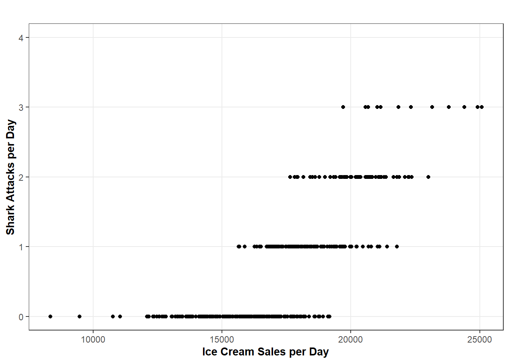
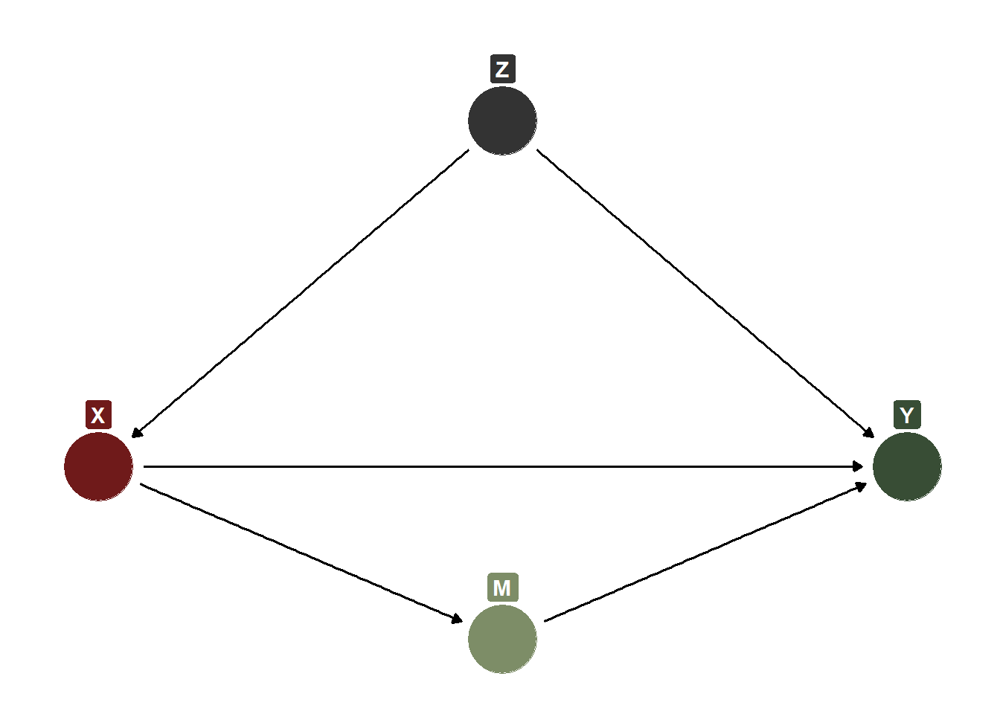
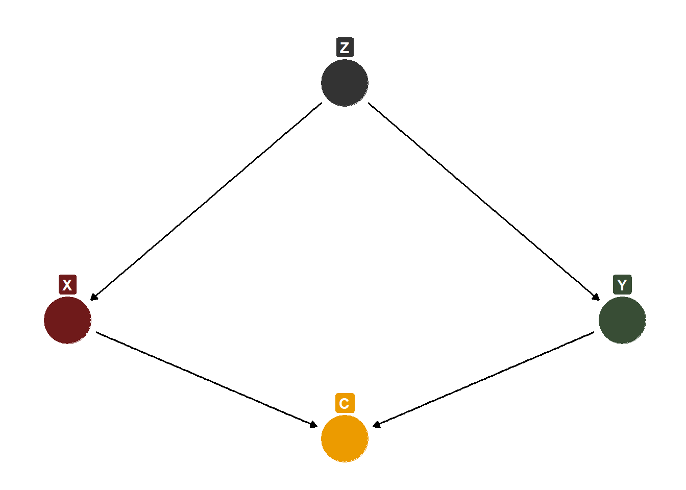
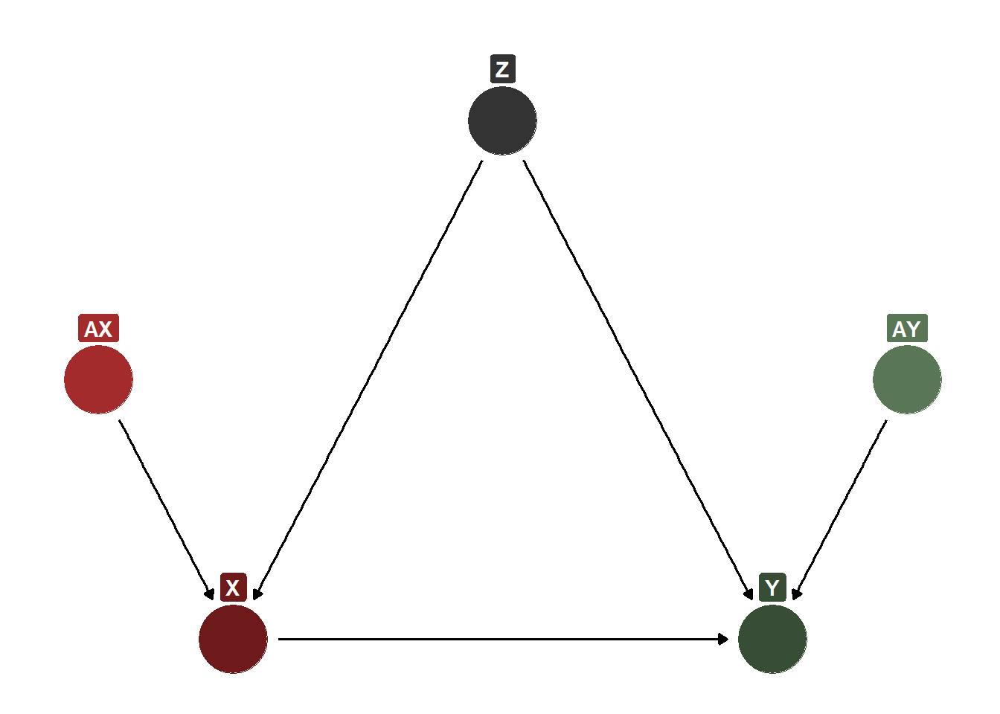
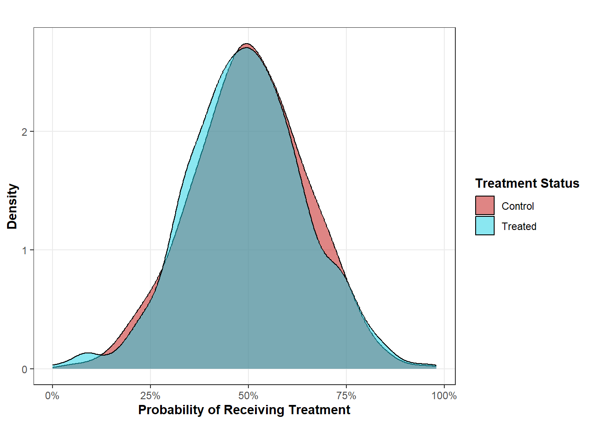
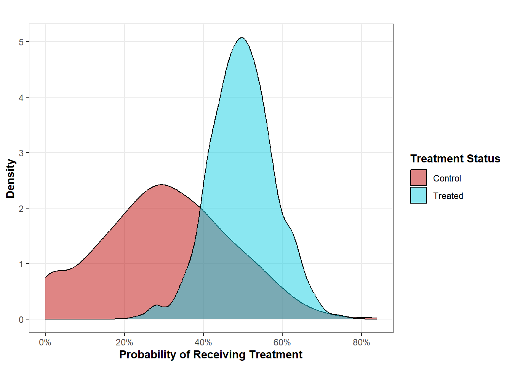
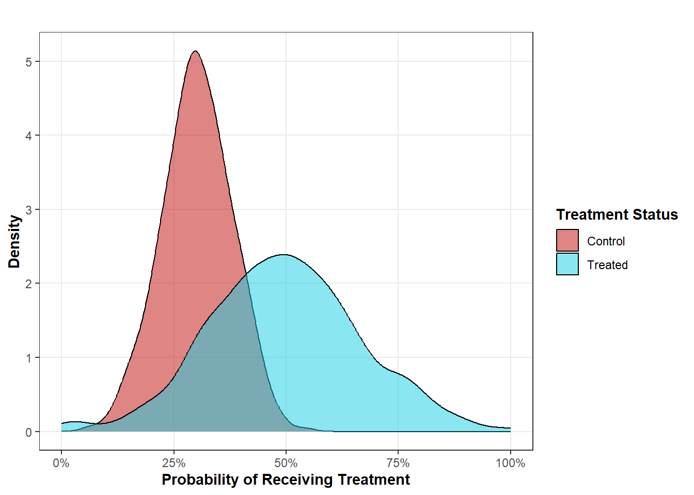
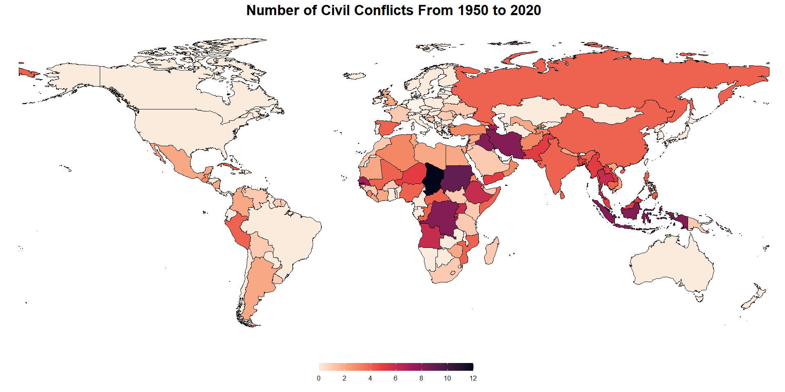

Learn about the core concepts of causal inference and the motivations for causal analysis with the help of simulation. Beginners to causal inference welcome!
Published
October 15, 2024
Code
# Load Librariespacman::p_load("dplyr", # Data Manipulation"ggdag", # Visualizing DAGs"ggplot2", # Data Visualization"scales", # Plotting Percentage Valuesinstall =FALSE)# Define a Custom Theme - Taken From Andrew Heiss's Blogsblog_theme <-function() {theme_bw() +# Start with theme_bwtheme(panel.grid.minor =element_blank(),plot.background =element_rect(fill ="white", color =NA),plot.title =element_text(face ="bold"),axis.title =element_text(face ="bold"),strip.text =element_text(face ="bold"),strip.background =element_rect(fill ="grey80", color =NA),legend.title =element_text(face ="bold") )}
Intro
In the interest of being direct, I want to state upfront that the purpose of this blog is to serve as a singular introductory resource to causal inference that anyone with a background in applied statistics can follow. This blog will cover what causal inference is, why it matters, and general practical matters that are important when doing applied causal inference. To root some of the conceptual aspects of causal inference in something tangible that the reader can observe, this blog will rely on simulated data. For those unfamiliar with simulation, the prior sentence might sound a bit vague. However, I promise that using simulation is an extremely powerful teaching mechanism!
Description, Prediction, and Causation
To understand causal inference, it’s important to contrast the goal of making causal inferences with other scientific endeavors. Broadly speaking, you can classify any contribution to scientific literature towards one of three different objectives:
Description: Descriptive research refers to any scholarship that seeks to define, measure, or report raw facts about some phenomenon of interest. If you are asking a “who?”, “what?”, “when?”, or “where?” question, you are asking a descriptive question. What state has the highest rate of police arrests? What type of individuals were most likely to get the COVID-19 vaccine? When do people typically buy their first house? These are all descriptive questions because they are asking factual questions about the world that can be answered by the accurate collection of information. Accurately collecting information is also a descriptive task. How should democracy be measured? Is our survey sample on American preferences for president reflective of the population’s attitudes? Again, these questions are all super diverse, but they all are seeking answers to better describe the world. I generally like to break descriptive research into these four sub-categories:
Measurement: How should \(X\) be measured? (i.e. intelligence, economic development, war, etc.) Answers the “what?” question.
Inference: In the case where we cannot measure a population (this is true for most social science inquiry), we settle for measuring a sample. How can we be sure that our descriptive measures for our sample are valid for the broader population? This is also a descriptive task.
EDA: EDA (exploratory data analysis) is a sort of informal term that refers to the process of exploring the data prior to any sort of advanced analysis. Typically, this ends up being a bunch of very common descriptive visualizations. Things like maps (“where?”), time series line plots (“when?”), and grouped bar charts (“who?”).
Correlation: Yep, any sort of correlational/associational analysis is descriptive. Correlation is just a measure of how much variables move with each other. Not whether one variable moving causes another variable to move… If \(X\) moves, does \(Y\) move too? Again, this is a measure describing how much one variable moves as another variable moves. Too often, researchers want their correlational research to do something more than it is capable of. Naturally, we like to read causal assumptions into correlations, especially when they are dressed up with fancy regression models. However, unless very strict conditions are met (these conditions are the entire purpose of this blog post), measures of correlations are just descriptions.
Prediction: The task of prediction indicates a desire to forecast/predict future or unknown values given a set of predictors. This task falls under the broad domain of machine learning where predictors are fed into models/algorithms which “learn” from the data to produce predictions about unknown values. Importantly, the goal of prediction is not to focus on the predictors themselves. Rather, predictors are an important tool in service of the ultimate goal, which is to focus on the predicted outcome. Using the classic linear regression formula as an example (\(Y = \beta_0 + \beta_1{X} + \epsilon\)), predictive tasks care about \(Y\). In other words, use whatever model and whatever set of predictors that are best able to predict unknown values of \(Y\) correctly. Sometimes, you’ll hear the term “feature importance” used in machine learning to evaluate the most “important” predictors for the model. This term is fine, as long as it is clearly understood that feature importance does not imply causality or effect magnitude. A variable that predicts a lot of variation in \(Y\) does not imply that there is a causal relationship, let alone a strong causal relationship. Referring back to my blog post on dynamic causal inference, ice cream sales are probably a pretty strong predictor of shark attacks, but one should be wary of assuming that these two things are causally related.
Causation: And now we get to causation. If our goal is causal, we are attempting to answer a “why?” question. For example, we might ask, “why do some countries go to war with each other so much while others are peaceful with each other?” We would then posit some theory explaining why a given variable answers, in part, this question. Causal questions are probably the most common type of questions that researchers in the social sciences are asking. However, because many researchers are trained to avoid using the word “cause”, many never realize that their questions are fundamentally causal. If you are using the words “why?”, “impact”, “effect”, “determinant”, etc., then you are handling a causal question that requires the appropriate methodology for interpretable results. For example, consider whether or not two countries are democratic (\(X\)) as a causal explanation for war/peace (\(Y\)). We can ask a “why?” question (why are some countries more or less peaceful with each other than others?), and we have offered a partial answer. I say partial because we generally don’t assume that there is a single variable that fully explains the answer to any “why?” question in the social sciences. Going back to the linear regression formula, the goal of causation is distinct from prediction because we do not care about maximizing how well our model predicts \(Y\). Instead, we are focused on building a model that gives \(\beta_1{X}\) a causal interpretation. A model that can do this will not necessarily predict \(Y\) well. In fact, I would say that a model that predicts \(Y\) very well will probably be inappropriate for causal inference (this will become apparent as the blog progresses). As it turns out, causal inference is actually very hard, but tackling these challenges is what scientists are trained to do.
Data are Dumb
So, what makes the goal of causal inference so hard? If causal inference was easy, we should be able to just look at the data and find our answers in there. Or maybe just plug a bunch of variables into a regression model and we would magically get causal effects. Unfortunately, while data are very useful, data alone, are very dumb.
And, by very dumb, I mean that data reports what is reports but has no underlying imagination or capability to infer. It’s because of these very reasons that all students eventually come to accept and repeat the mantra “correlation does not mean causation”. Through data alone, we can observe correlations. Sometimes, correlations are good evidence for causation. For example, there’s probably a correlation between your speed and when you get speeding tickets and that correlation likely implies a causal relationship. However, sometimes correlations are terrible evidence for causation. Again, I will cite my ice cream sales-shark attacks correlation as an example.
Code
# Create Simulated Datadays <-365# Number of Days in a Yeartemp <-pmin(pmax(rnorm(days, mean =70, sd =10), 30), 100) # Temperatureshark <-0.5+0.1* (temp -70) +rnorm(days, mean =0.5, sd =0.5) # Shark Attacksshark <-pmax(shark, 0) # Lowest Shark Attacks Can Go Is Zeroshark <-floor(shark) # Round This Down (There Can't Be Any 0.5 Shark Attacks)ice <-15000+250* (temp -70) +rnorm(days, mean =2500, sd =500) # Ice Cream Sales with Random Variationsim <-data.frame(days, temp, shark, ice) # Combine Data# Create a Scatter Plotggplot(sim, aes(x = ice, y = shark)) +geom_point() +labs(x ="Ice Cream Sales per Day", y ="Shark Attacks per Day", title ="") +ylim(0, 4) +blog_theme()

Correlation Between Shark Attacks and Ice Cream Sales
As a human, we know that something is up here and, intuitively, this cannot be a causal relationship (spoiler, this relationship is confounded by temperature… see my aforementioned blog post for more details). However, our data are dumb, and if we just rely on the data for evidence, we will end up with really dumb conclusions. This is why causal inference gets so hard. To make causal inferences, we either have to rely on very strict research designs that will, for the most part, fail in practice or rely on subjective domain knowledge to pair with the data to get closer to the possibility of estimating causal effects. As enticing as it is to rely on the “data alone”, this is a standard that I, along with many others, would argue results in very bad science because you can’t “mine” data for causal effects. It does not organically exist in the data! You have to use the right tools to find it and not all of these tools are purely statistical!
The Fundamental Problem of Causal Inference
Causal inference is hard (as I’ve already stated several times) and it is, in part, so hard because causality is a really difficult concept to measure and observe. Think about it… Imagine that you have a pounding headache and are frantically searching for Ibuprofen around the house. You search through your drawers and can’t find any. Only when you clear out the cabinets do you find the expired bottle of Ibuprofen that’s been out of data for 2 years. Should you take it? It’s expired, so what if it harms you? Or, maybe its expiration just means that it’s pain-reliving effects have faded away? Nonetheless, your headache is pounding and you decide to take it.
Three hours later, your headache is gone! Did the expired Ibuprofen work? In other words, did taking that expired Ibuprofen have a causal effect on your headache pain? The very naive answer would be that, yes, it did work. After all, you took the medicine and then your headache went away. Not only is this naive, it’s also just lazy thinking. A number of other things could have been happening before and after taking Ibuprofen that could impact headache severity. For example, perhaps your headache was already on its way out and would have subsided regardless of you taking the expired Ibuprofen. Or, maybe you also decided to drink more water after you swallowed the pill and it was actually the water - not the medicine - that caused your headache to go away. Okay, all these what-ifs, but how should you evaluate the impact of the Ibuprofen instead?
This is where the concept of the counterfactual - something that did not happen, but could have happened - comes in handy. If you wanted to know whether the Ibuprofen worked, you’d need to know your headache status when you took the Ibuprofen (the factual) and your headache status when you didn’t take the Ibuprofen (the counterfactual). If we take the difference between the factual (\(Headache_{Ibuprofen}\) ) and the counterfactual (\(Headache_{No Ibuprofen}\)), then we could know the exact causal effect of the expired Ibuprofen because the only difference between the factual and counterfactual was the use of the expired Ibuprofen. This way of thinking about causality can be referred to as the Potential Outcomes Framework (POF) and it is the dominant way of thinking about capturing causality in scientific research day.
But there’s a huge problem with the POF… we only ever observe one potential outcome, and, in the case of our expired Ibuprofen, we need two potential outcomes (the outcome when you take it vs. the outcome when you don’t). In the working example, you taking the expired Ibuprofen puts you halfway there, but how are you supposed to make the counterfactual happen where you don’t take it happen? You can wait until you get another headache, but that headache could be substantially different than this headache. By the time you get another headache, your current expired Ibuprofen will be even more expired, and now your “treatment” is different than what it was when you observed the factual. Besides, all sorts of other factors will be different about you the next time you get a headache that might matter (like water intake, stress levels, the potential that you’ve contracted COVID-19, the flu, etc.).
The spoiler alert here is that you cannot observe the counterfactual. Because you took the Ibuprofen, you can’t observe the counterfactual when you didn’t take it. If you had instead not taken the Ibuprofen, you would not be able to observe the counterfactual where you would have taken the Ibuprofen. That fact that at least two potential outcomes are needed for causal inference, but you can only ever observe one, is known as the fundamental problem of causal inference. In its purest sense, concretely observing causality is impossible without a time machine (if you had a time machine, you could take the Ibuprofen and let a day pass, then, take the time machine back to the moment right before you took it, then refrain from taking it, and observe the differences in outcomes). However, the world of causal inference is (mostly) not about guessing games, and you can take advantage of very clever research designs and statistical methods to still observe causality despite the clear logical impossibilities of the fundamental problem of causal inference.
The Power of Randomization
Randomization has long been praised as one of the best (some might claim, the “only”) tools to make causal inferences. It is very simple conceptually. To demonstrate this simplicity, imagine that we have 1000 participants in our experiment where we want to test the headache-reducing properties of 2-year expired Ibuprofen. As stated before, you’d really struggle with estimating causal effects for each individual because you would need to know each individual’s unobserved potential outcome. Indeed, estimating such individual-level effects is still incredibly hard and not commonplace in contemporary scientific research. However, we can use randomization to estimate group-level causal effects.
We can do so by simply randomizing who gets access to the treatment - in this case, expired Ibuprofen vs. a placebo. We can randomize via coin flip, a random number generator… really whatever you want so long as the treatment assignment mechanism is truly random. In theory, by randomizing access to the treatment, our treated and control group should, on average, be identical to each other. If our process was truly random, then the number of men/women should be pretty equivalent in the two groups. If our process was truly random, the age distribution should be roughly the same between the treated/control, etc.
This is very important because it deals with the type of problems that observational science struggles with. In observational science, we simply observe what people/units of observation do and try to learn from it. In other words, we don’t have control over who gets access to the treatment. When you don’t have control over the treatment assignment mechanism, causal inference gets really hard. In the context of this example, imagine if we just had to design and publish a survey asking people whether they took expired Ibuprofen. Did they all take the exact amount? Are they being honest in reporting their headache status? What about the people who didn’t respond to the survey? That could be problematic if we’re leaving them out because now we might be struggling with some sort of selection bias. Plus, now we have to think about all of the things that confound the relationship between taking expired Ibuprofen and headache relief. For example, time could be one. Maybe most people take expired Ibuprofen as a last resort after trying to “wait the headache out” but, unbeknownst to them, the headache is already almost over anyways. If that’s true, maybe the expired Ibuprofen doesn’t work, but you would now need to control for it because you don’t have control over the treatment assignment mechanism like you would under a randomized design.
In short, the power of randomization is that it allows us to create groups that can serve as counterfactuals for each other. \(Group_{X_1}\) reflects a population where everyone is treated and \(Group_{X_0}\) reflects a population where nobody is treated. While the individuals within each group are different, the groups as a unit are identical except for their treatment status. Again, the groups are identical because any characteristic of the group should be evenly distrubuted between the treated and control groups due to randomization. If we observe an average difference in headache severity between the two groups, we can attribute this difference to taking/not taking expired Ibuprofen.
The way I’ve just explained how randomization can help us estimate causal effects really takes advantage of the potential outcomes framework for conceptualizing causality. However, you can also use a tool called a directed acyclic graph (DAG) to demonstrate why randomization is so helpful for making causal inferences. In general, DAGs are incredibly useful for visualizing our causal assumptions between treatment, outcome, and other variables that we might think are relevant to account for. But I think they are also very useful as a teaching tool to demonstrate why randomization works in case the potential outcomes framework didn’t cut it for you.
Consider the DAG below. We have \(X\) (some treatment of interest) and \(Y\) (some outcome of interest). We would like to estimate the causal effect of \(X\) on \(Y\), but we have \(Z\) as a confounder to account for. \(Z\) is a confounder because it causes some change in the likelihood of receiving \(X\) and also some change in the values of \(Y\). In the ice cream sales-shark attacks case, temperature is a confounder (Ice cream sales (\(X\)) \(\leftarrow\) Temperature (\(Z\)) \(\rightarrow\) Shark attacks (\(Y\)). According to this very simple DAG, if we wanted to estimate the causal effect of \(X\) on \(Y\), we would need to control for \(Z\) somehow. If we don’t do this, then the estimated association between \(X\) and \(Y\) is at least partially spurious. That is, we know before we even estimate the effect of \(X\) on \(Y\) that part of the association is not causal and is instead being caused by \(Z\).
Code
simple_dag <-dagify( Y ~ X + Z, X ~ Z,exposure ="X",outcome ="Y",coords =list(x =c(Y =7, X =4, Z =5.5),y =c(Y =2, X =2, Z =3)),labels =c(Y ="Y", X ="X", Z ="Z"))# Convert DAG to a Tidy Object for Plottingsimple_dag_tidy <- simple_dag %>%tidy_dagitty() %>%node_status()status_colors <-c(exposure ="#ba4244", outcome ="#3f6275")# Create Plotggplot(simple_dag_tidy, aes(x = x, y = y, xend = xend, yend = yend)) +geom_dag_edges() +geom_dag_point(aes(color = status)) +geom_label(aes(label = label, fill = status),color ="white", fontface ="bold", nudge_y =0.15) +scale_color_manual(values = status_colors, na.value ="grey20") +scale_fill_manual(values = status_colors, na.value ="grey20") +guides(color ="none", fill ="none") +theme_dag()
Simple DAG Showing Confounding
In this very simplified case, it might be easy to just go ahead and control for \(Z\). However, keep in mind that there are typically more than just 1 confounder. Also, don’t forget that we don’t know how many confounders there are… We might control for 10 confounders, but we can’t ever be totally sure that we’ve accounted for all of them. Also, even if we did just have 1 confounder to deal with, what if we didn’t have data on \(Z\) or what if we couldn’t measure it reliably? All of these concerns are those that motivate the use of randomization and I think the value of randomization can be made very clear with a DAG. Think about it… if we make sure that only random chance is impacting whether someone gets \(X\) or not, then the following DAG reflects the randomized treatment assignment process.
Code
simple_dag <-dagify( Y ~ Z + X, X ~ Random,exposure ="X",outcome ="Y",coords =list(x =c(Y =7, X =4, Z =5.5, Random =4),y =c(Y =2, X =2, Z =3, Random =3)),labels =c(Y ="Y", X ="X", Z ="Z", Random ="Chance"))# Convert DAG to a Tidy Object for Plottingsimple_dag_tidy <- simple_dag %>%tidy_dagitty() %>%node_status()status_colors <-c(exposure ="#6f1a1a", outcome ="#384d35")# Create Plotggplot(simple_dag_tidy, aes(x = x, y = y, xend = xend, yend = yend)) +geom_dag_edges() +geom_dag_point(aes(color = status)) +geom_label(aes(label = label, fill = status),color ="white", fontface ="bold", nudge_y =0.15, nudge_x =0.1) +scale_color_manual(values = status_colors, na.value ="grey20") +scale_fill_manual(values = status_colors, na.value ="grey20") +guides(color ="none", fill ="none") +theme_dag()
Simple DAG Showing Randomization of Treatment
Crucially, \(Z\) does not impact \(X\) anymore (the only thing that impacts \(X\) is random chance now), and because \(Z\) does not impact \(X\), we don’t have to worry about controlling for \(Z\) because randomization is controlling for\(Z\)now. Rather than specifying \(Z\) in a regression model, randomization is making sure that different values of \(Z\) are balanced across those who get \(X\) and those who don’t. This balancing property not only applies to \(Z\) but also for any and every unknown/known confounder. Powerful stuff!
It is at this point in this blog post that we’re really going to let simulation shine and, if you’re not already familiar with simulation, I’m hoping this section will really help you see how powerful simulation is for science and statistics. The basic intuition for simulation is this: in the real world, we don’t know the causal effect of \(X\) on \(Y\). We have to use tools to estimate the causal effect because the causal effect isn’t something that we can just mine for in the data. But, if we have to use tools to estimate causal effects, how do we know that the tools we use are accurately estimating causal effects? As stated before, the fundamental problem of causal inference states that we can’t ever observe all potential outcomes that we need. If that’s the case, how do we know that something like randomization actually works? We can’t use real data, because we don’t know the real effect in the real data (that’s the data we’re trying to infer causation from). However, we can use simulated data where we directly specify the causal effect in the simulated data itself. Once we know what this causal effect is, we can test our different tools to see how well our tools are able to capture the causal effect. Simulating data gives us a tangible benchmark to evaluate the effectivness of models/research designs because no such benchmarks exist in real life data. If our approach works on simulated data, then, assuming the assumptions of our approach hold in real life, the estimated causal effect using real world data should actually be the causal effect of interest.
In the code chunk below, we are going to use simulation to evaluate whether randomization can actually help us estimate causal effects. By this point, you know the logic of randomization, but does it actually work in practice? The code below involves simulating two data sets, each with 3000 observations. In the first data set, we are trying to estimate the effect of \(X\) on \(Y\), but this relationship is confounded by \(Z\). In the second data set, we are also trying to estimate the effect of \(X\) on \(Y\) and \(X\) is assigned totally at random, rather than being impacted by \(Z\).
set.seed(1234)# Simulate Data Where X-Y Relationship is Confounded# Number of Observationsn <-3000# Simulate the Confounder as a Continuous VariableZ <-rnorm(n, mean =50, sd =10)# Simulate the Treatment as a Binary Variable That is Impacted by Z# Using the Inverse Logit Functionprob_X <-1/ (1+exp(-(-2.5+0.05* Z)))X <-rbinom(n, size =1, prob = prob_X)# Simulate the Outcome with a Base Number to Start with (50), the Impact of X,# the Impact of Z, and Random Noise. The Estimated Effect of X Should Be 20Y <-50+ (20*X) + (5*Z) +rnorm(n, mean =0, sd =10) # Combine This Datasim_data <-tibble(n =1:n,Y = Y,Z = Z,X = X)# Run a Biased Regression Model Omitting Zlm(Y ~ X, data = sim_data)
Call:
lm(formula = Y ~ X, data = sim_data)
Coefficients:
(Intercept) X
287.69 44.19
# Run a Regression Model Including Zlm(Y ~ X + Z, data = sim_data)
Call:
lm(formula = Y ~ X + Z, data = sim_data)
Coefficients:
(Intercept) X Z
48.409 20.090 5.032
# Simulate Data Where X-Y Relationship is Not Confounded Due to RandomizationX_random <-rbinom(n, size =1, prob =0.5)Y <-50+ (20*X_random) + (5*Z) +rnorm(n, mean =0, sd =10) sim_rando_data <-tibble(n =1:n,Y = Y,Z = Z,X = X_random)# Run a Regression Model with X Randomizedlm(Y ~ X, data = sim_rando_data)
Call:
lm(formula = Y ~ X, data = sim_rando_data)
Coefficients:
(Intercept) X
300.8 19.2
As you can see from the confounded data, when we run lm(Y ~ X), our model’s estimated effect (44.19) is way off from estimating the actual effect (20). However, when we adjust for \(X\), we get the actual causal effect that we expect (20.1). That’s great, but remember this is a super simplified data set, where the X \(\rightarrow\) Y relationship is only confounded by one confounder. In real life, this is never the case. Randomization can allegedly come to the rescue in such cases, but does our simulated exercise affirm this? Pretty much, yes, with an estimated effect of (19.2). Even though, in our randomized data, \(Z\) still impacts \(Y\), we don’t need to control for \(Z\) to estimate the effect of \(X\) on \(Y\). Keep in mind that these results are all generated from one random sample of 3000 observations. Naturally, the estimated unbiased effects (20.1 with regression adjustment and 19.2 with randomization) would change with each random sample a bit. If we ran this code 1000 times, drawing a different sample of 3000 observations each time, we would get closer to an average estimated effect of 20 for both methods. Basically, I wouldn’t read into the fact that neither estimates exactly 20 too deeply.
When Experiments Fall Short
So, randomization is great, and simulation is a cool way to evaluate which strategies work for causal inference. The bad news is that running randomized experiments are hard to pull off for three primary reasons. First, randomized experiments may be unethical. This one is pretty self-explanatory. Experimentation often involves real, living human beings, especially in the social sciences. Many questions in the social sciences revolve around harmful treatments (in this case, it might be better to refer to treatments as “exposures” since “harmful treatments” sounds weird). For example, we might ask, “what is the impact of food pantries on nutrition?” Something that would be very unethical is randomizing who gets access to food pantries. Some people would get access… and other wouldn’t, who might very much need that access.
Second, randomization may be impossible. This is something I am very familiar with, given my background in conflict research. There are all sorts of interesting questions in conflict research, but ask yourself how plausible any of these sound…. “What is the effect of democracy on civil conflict?”… Is a good researcher supposed to randomly assign which countries get to be democratic? Or, maybe you’re asking “What is the effect of civilian victimization during war on the prospects of post-conflict peace?”… Again, are researchers supposed to randomly assign atrocities against civilians? That’s not only impossible, but obviously, this is a bit of a double-dipper here since this idea is also pretty unethical!
Lastly, randomization may be unfeasible. There may be instances where randomization is neither morally wrong nor impossible. However, randomized experiments are still expensive and can take a lot of time. In many cases, lack of funding or lack of time may simply make a randomized experiment an unfeasible option. While randomization may represent an ideal approach, many restricted researchers may simply have to collect observational data. Again, the crucial distinction between observational data is that, unlike experimental data, the researcher is not in control of the treatment assignment mechanism. Units select into and/or are exposed to the treatment through means entirely outside of the researchers control.
When a researcher has to work with observational data and is interested in estimating causal effects, knowingly or unknowingly, they are operating under an identification strategy known as selection on observables. Okay so two new terms here. An identification strategy refers to a set of assumptions that, when met, allow one to identify a causal effect. I like to think of it like a fossil excavation. The fossil (causal effect) is in the ground (data) somewhere. But randomly chipping away at the earth isn’t going to get you the causal effect. You need to right tools for it (identification strategy). There are likely several tools you could use, but, given the material you’re working with and the fossil you’re trying to locate, you’ll need to adjust which toolkit you’ll end up using. Randomization is one identification strategy we could use, but the conditions need to be right for that identification strategy to be appropriate.
Selection on observables is a very popular, but also a very controversial identification strategy. Selection on observables operates under the assumption that those who received treatment (\(X_1\)) and those who didn’t (\(X_0\)) are different groups. For example, if \(X\) is a hair loss medication, then \(X_1\) may have a disproportionately higher number of men represented than in \(X_0\). Our goal for causal inference is to estimate counterfactuals so that we can take the difference between the factual and the counterfactual as the causal effect of interest. If \(X_1\) and \(X_0\) are fundamentally difference in relevant ways, then the difference between \(Y_1\) (the outcome for those treated) and \(Y_0\) (the outcome for those not treated) is not a valid counterfactual due to these differences. When we randomized \(X\), we could be sure that \(X_1\) and \(X_0\) are comparable due to the balancing properties of randomization. With observational data, \(X_1\) and \(X_0\) are almost guaranteed to be different in various ways.
Under selection on observables, \(X_1\) and \(X_0\) can be considered comparable, conditioned on a set of observable characteristics that we can adjust for. This is what we do when we control for variables in regression models. Going back to our very simple example with only one confounder, \(Z\), adjusting for \(Z\) would make \(Y_{X_1}\) minus \(Y_{X_0}\) a valid factual minus counterfactual comparison to estimate a causal effect. Note that selection on observables doesn’t claim that, after adjusting for \(Z\), \(X_1\) and \(X_0\) are the same, it instead states that any remaining difference between \(X_1\) and \(X_0\) is random and, as the randomization section demonstrated, random “other things” that impact \(Y\), but not \(X\), are not things that need to be accounted for. So… all you need to do is identify the observables that make \(X_1\) and \(X_0\) different! And now, we run into our next problem…
No Unobserved Confounding and Sensitivity Analyses
I’ve alluded to this problem earlier throughout this blog post, but the central problem with selection on observables is that we can never know if we’ve adjusted for all of the necessary observables. When I simulated data, I had control over how many confounding variables there were. So far, we’ve used a very simple framework, with just one confounder, \(Z\). Because I simulated the data, I had the luxury of knowing how many confounders there were. In the real world, we do not know how many confounders there are, and it’s impossible to 100% know if you’ve adjusted for all confounders. Don’t get me wrong, when operating under selection on observables, you do your best to identify as many confounders as you can (this is why DAGs are so useful) but, DAGs operate under your causal assumptions which may not reflect the reality of the world. Your assumptions may be wrong and assumed confounder \(Z\) may not actually be a confounder. You may identify dozens of confounders, but there could be another confounder that you didn’t account for… and there’s no way to test for this. Plus, even if you did manage to identify all confounders (not that you would ever know if you did), you would need to 1) make sure that all confounders are measured correctly and 2) make sure you that you specify the functional form for each confounder correctly in a regression model.
To recap, absent randomization, you still can theoretically estimate causal effects. One alternative identification strategy to randomization is selection on observables where, post-confounder adjustment, the treated and control groups are comparable so that unbiased causal inference can take place. However, the researcher is in charge of identifying, measuring, and correctly specifying these confounders, which involves a lot of theory and subjectivity. Given all of this room for error, selection on observables is not considered to be a strong identification strategy, and many rely on it only as a last resort when randomization or other rare identification strategies are not available options. That’s a bummer. Are researchers using selection on observables just supposed to tell the audience “trust me” when it comes to control variable selection and the quality/reliability of their causal inferences?
Well, this de facto is the case in most published selection on observables papers. Sure, scholars make very brief justifications for why they include certain control variables (importantly, a lot of these justifications boil down to “that’s the variable we’ve always controlled for”… PSA: don’t do that!). But most of the time, it doesn’t go beyond that very much. This is why many researchers acknowledge that making causal inferences from observational research designs isn’t always the best practice. Despite this acknowledgement, many researchers engage in such inferences by substituting the word “cause” for “impact”, “effect”, etc. which equally imply causation (don’t do that either!).
So, do you just give up on trying to make causal inferences at this point? While you can’t test for whether you’re missing a confounder, you can test for what impact a hypothetical missing confounder would have on your analysis if it was omitted. This sort of test is referred to as a sensitivity analysis because we are testing how sensitive our estimate is to various hypothetical levels of unobserved confounding. Sensitivity analyses are incredibly valuable tools for causal inference because, while they don’t tell us whether we met the required assumptions to make causal inferences, they can tell us how much our estimate would change if we violated the necessary identification assumptions to varying degrees. From this, we can still provide pretty compelling causal evidence if our estimate is robust to various hypothetical identification assumption violations. Alternatively, if our estimate changes a lot due to relatively small identifying assumption violations, this would tell us that, assuming these violations are likely (which, when dealing with confounders, it’s probably a good idea to assume that you are missing some confounders, even if their confounding effect is small), our research design is not able to provide sufficient evidence that our estimate of the causal effect of \(X\) is the true causal effect.
Again, simulation is a very valuable tool here to help us understand the intuition behind sensitivity analyses. In the following syntax, we keep most of the structure of the initial simulated data, with a specified effect size of 20. Then, we simulate 10 different confounders that have varying effect sizes on \(Y\) starting from 0.25x the size of 20 and then going up in 0.25-increments to 2.5x 20. Once this is done, I am running 20 linear regressions; 2 for each confounder with 1 specfying the confounder in the regression model and the other omitting the confounder.
set.seed(1234)# Simulate Data Where X-Y Relationship is Confounded# Number of Observationsn <-3000# Simulate the ConfounderZ <-rnorm(n, mean =50, sd =10)# Simulate The Treatment That is Impacted by the Confounderprob_X <-1/ (1+exp(-(-2.5+0.05* Z)))X <-rbinom(n, size =1, prob = prob_X)# Simulate 10 Outcomes That Are Affected by Different ConfoundersY_1 <-50+ (20*X) + (5*Z) +rnorm(n, mean =0, sd =10) # Z is 1/4 XY_2 <-50+ (20*X) + (10*Z) +rnorm(n, mean =0, sd =10) # Z is 1/2 XY_3 <-50+ (20*X) + (15*Z) +rnorm(n, mean =0, sd =10) # Z is 3/4 XY_4 <-50+ (20*X) + (20*Z) +rnorm(n, mean =0, sd =10) # Z = XY_5 <-50+ (20*X) + (25*Z) +rnorm(n, mean =0, sd =10) # Z is 1.25x XY_6 <-50+ (20*X) + (30*Z) +rnorm(n, mean =0, sd =10) # Z is 1.5x XY_7 <-50+ (20*X) + (35*Z) +rnorm(n, mean =0, sd =10) # Z is 1.75x XY_8 <-50+ (20*X) + (40*Z) +rnorm(n, mean =0, sd =10) # Z is 2x XY_9 <-50+ (20*X) + (45*Z) +rnorm(n, mean =0, sd =10) # Z is 2.25x XY_10 <-50+ (20*X) + (50*Z) +rnorm(n, mean =0, sd =10) # Z is 2.5x X# Combine This Datasim_data <-tibble(n =1:n,Y_1 = Y_1,Y_2 = Y_2,Y_3 = Y_3,Y_4 = Y_4,Y_5 = Y_5,Y_6 = Y_6,Y_7 = Y_7,Y_8 = Y_8,Y_9 = Y_9,Y_10 = Y_10,Z = Z,X = X)# Run 10 Biased and 10 Unbiased Regression Modelsmodels <-list(lm(Y_1 ~ X, data = sim_data),lm(Y_2 ~ X, data = sim_data),lm(Y_3 ~ X, data = sim_data),lm(Y_4 ~ X, data = sim_data),lm(Y_5 ~ X, data = sim_data),lm(Y_6 ~ X, data = sim_data),lm(Y_7 ~ X, data = sim_data),lm(Y_8 ~ X, data = sim_data),lm(Y_9 ~ X, data = sim_data),lm(Y_10 ~ X, data = sim_data),lm(Y_1 ~ X + Z, data = sim_data),lm(Y_2 ~ X + Z, data = sim_data),lm(Y_3 ~ X + Z, data = sim_data),lm(Y_4 ~ X + Z, data = sim_data),lm(Y_5 ~ X + Z, data = sim_data),lm(Y_6 ~ X + Z, data = sim_data),lm(Y_7 ~ X + Z, data = sim_data),lm(Y_8 ~ X + Z, data = sim_data),lm(Y_9 ~ X + Z, data = sim_data),lm(Y_10 ~ X + Z, data = sim_data))bias <-tibble(confounder_size =rep(seq(0.25, by =0.25, length.out =10), length.out =length(models)),bias =sapply(models, function(mod) coef(mod)["X"] -20)) %>%mutate(z_omit =ifelse(row_number() <=10, "Yes", "No") )
And now, we can visualize the results of this sensitivity analysis. As you can see in the plot below, when the magnitude of a confounder gets bigger, the bias in our estimate also does and we start making very bad causal inferences. Note: there’s a lot of room for more complex stuff to do. You can do a sensitivity analysis where you examine the magnitude of the confounder relative to its effect on the treatment rather than the outcome. Or… you can simulate tons of confounders that have varying effects on both the treatment and outcome. What about more than just one confounder? That’s something else to think about. Also, things get more complicated when you depart from linear regression and start dealing with logit, Poisson, duration models, etc. so keep that in mind as well. Thankfully, other people have already done the hard work and have developed packages to execute sensitivity analyses for GLMs (such as tipr).
bias %>%ggplot(aes(x = confounder_size, y = bias, color = z_omit)) +geom_line() +geom_point() +scale_x_continuous(breaks =seq(0.25, 2.5, by =0.25)) +scale_color_manual(values =c("Yes"="#e31837","No"="#003594") ) +labs(title ="",x ="Size of Hypothetical Missing Confounder Relative to Treatment Effect",y ="Bias (Estimated Effect - True Effect)",color ="Is Z Omitted\nFrom the Model?") +blog_theme() +theme(plot.title =element_text(face ="bold"), legend.title =element_text(face ="bold") )
Unobserved Confounder Sensitivity Analysis
Importantly, whether or not such a large confounder exists is something that is also - you guessed it - not testable. This is where it is so important to rely on theory and domain knowledge to evaluate whether such a hypothetical, unobserved confounder is possible. After all, the bias is huge in this case when a confounder that has 2.5x the effect of \(X\) is omitted from the analysis. But you only need to worry about that if it’s plausible that such a large confounder exists.
As a final note before moving on to the next section, I have made the point that, if you are operating under selection on observables, you need to makes sure there is no unobserved/unmeasured confounding. That is a very simple way to state this assumption, but, you will find this assumption expressed in tons of different ways such as ignorability, exchangeability, conditional independence, strict exogeneity, etc. Don’t be scared by these terms! While I suggest going through the logic of each assumption, what’s important to remember is that, whatever you call it, you need to make sure there is no unmeasured confounding if you want to make causal inferences!
Don’t Be a Control Freak! Overadjustment Bias
Because you want to make sure there is no unmeasured confounding, you might be tempted to control for as many variables as possible “just to be sure”. Don’t be a control freak! This idea of controlling for as much as possible is a bad idea, not only because it can stretch the statistical capabilities of your model, but also because controlling for certain types of variables can harm your effort to make causal inferences. In this section, we are going to go through 4 types of variables that are a bit different from the three we have been discussing so far (treatment, outcome, and confounders).
Mediators
The first type of variable that we want to avoid controlling for is the mediator. A mediator is any variable that is, in part caused by \(X\) which then, in part, causes a change in \(Y\).
Code
# Set Up the DAGsimple_dag <-dagify( Y ~ Z + X + M, X ~ Z, M ~ X,exposure ="X",outcome ="Y",coords =list(x =c(Y =7, X =4, Z =5.5, M =5.5),y =c(Y =2, X =2, Z =3, M =1.5)),labels =c(Y ="Y", X ="X", Z ="Z", M ="M"))# Convert DAG to a Tidy Object for Plottingsimple_dag_tidy <- simple_dag %>%tidy_dagitty() %>%mutate(status =case_when( name =="X"~"exposure", name =="Y"~"outcome", name =="M"~"mediator",TRUE~"other" ))status_colors <-c(exposure ="#6f1a1a", outcome ="#384d35", mediator ="#7d8d67")# Create Plotggplot(simple_dag_tidy, aes(x = x, y = y, xend = xend, yend = yend)) +geom_dag_edges() +geom_dag_point(aes(color = status)) +geom_label(aes(label = label, fill = status),color ="white", fontface ="bold", nudge_y =0.15) +scale_color_manual(values = status_colors, na.value ="grey20") +scale_fill_manual(values = status_colors, na.value ="grey20") +guides(color ="none", fill ="none") +theme_dag()

DAG Incluing a Mediator
Controlling for a mediator should be avoided because, if we control for it, our estimated effect of \(X\) on \(Y\) will be a deflated version of the causal effect of interest because controlling for the mediator effectively removes the part of the causal effect of \(X\) on \(Y\) that is mediated through \(M\). We can see this clearly with the following simulated regressions.
set.seed(1234)# Simulate Data Where X-Y Relationship is Confounded# Number of Observationsn <-3000# Simulate the Confounder as a Continuous VariableZ <-rnorm(n, mean =50, sd =10)# Simulate the Treatment as a Binary Variable That is Impacted by Z# Using the Inverse Logit Functionprob_X <-1/ (1+exp(-(-2.5+ (0.05*Z))))X <-rbinom(n, size =1, prob = prob_X)# Simulate a Mediator That is Impacted by XM <- (10*X) +rnorm(n, mean =0, sd =10) # Simulate the Outcome with a Base Number to Start with (50), the Impact of X,# the Impact of Z, the Impact of M Mediated by X, and Random Noise. The Estimated Total Effect of X Should Be 30Y <-50+ ((20*X) + M) + (5*Z) +rnorm(n, mean =0, sd =10) # Combine This Datasim_data <-tibble(n =1:n,Y = Y,Z = Z,X = X,M = M,)# Run a Biased Model Where the Mediator is Included summary(lm(Y ~ X + Z + M, data = sim_data))
Call:
lm(formula = Y ~ X + Z + M, data = sim_data)
Residuals:
Min 1Q Median 3Q Max
-33.299 -6.454 -0.020 6.449 33.509
Coefficients:
Estimate Std. Error t value Pr(>|t|)
(Intercept) 50.08945 0.91749 54.59 <2e-16 ***
X 20.17165 0.41190 48.97 <2e-16 ***
Z 5.00013 0.01851 270.16 <2e-16 ***
M 0.98048 0.01810 54.18 <2e-16 ***
---
Signif. codes: 0 '***' 0.001 '**' 0.01 '*' 0.05 '.' 0.1 ' ' 1
Residual standard error: 9.805 on 2996 degrees of freedom
Multiple R-squared: 0.9708, Adjusted R-squared: 0.9708
F-statistic: 3.325e+04 on 3 and 2996 DF, p-value: < 2.2e-16
# Run an Unbiased Model Where the Mediator is Excludedsummary(lm(Y ~ X + Z, data = sim_data))
Call:
lm(formula = Y ~ X + Z, data = sim_data)
Residuals:
Min 1Q Median 3Q Max
-52.431 -9.296 0.177 9.374 45.548
Coefficients:
Estimate Std. Error t value Pr(>|t|)
(Intercept) 48.52958 1.29011 37.62 <2e-16 ***
X 30.06503 0.51941 57.88 <2e-16 ***
Z 5.03174 0.02602 193.35 <2e-16 ***
---
Signif. codes: 0 '***' 0.001 '**' 0.01 '*' 0.05 '.' 0.1 ' ' 1
Residual standard error: 13.79 on 2997 degrees of freedom
Multiple R-squared: 0.9423, Adjusted R-squared: 0.9422
F-statistic: 2.446e+04 on 2 and 2997 DF, p-value: < 2.2e-16
Note that, in this blog post, \(X\) = 20 is the sort of unbiased causal effect we have been looking for so far. However, I’ve modified that a bit here because our mediator contributes to the causal effect of \(X\) on \(Y\). In reality, our causal effect of \(X\) should be the direct effect of \(X\) on \(Y\) (20) but it should also include the total effect that is mediated through \(M\) (10). In the first model, we see our direct effect is correct, but we are not attempting to estimate the direct effect. The direct effect is accurate because we are controlling for our mediator and our mediator is not confounded. That’s right… if you want to work with a mediator to estimate direct and indirect effects (this practice is referred to as mediation analysis) of \(X\) and \(M\) on \(Y\), you’ve doubled the challenge of dealing with confounding because, not only do you have to make sure that \(X\)\(\rightarrow\)\(Y\) is unconfounded, you also have to make sure that \(M\)\(\rightarrow\)\(Y\) is also unconfounded. This is a major reason behind the skepticism for mediation analyses. Regardless, as you can see in the second model where \(M\) is excluded, we get the correct total effect of \(X\) on \(Y\), which includes the effect of \(X\) on \(Y\) and the effect of \(M\) on \(Y\) that is caused by \(X\).
Colliders
Colliders are interesting because they are very sneaky. I like to think of them as inverse confounders. You need to control for a confounder (\(X\)\(\leftarrow\)\(Z\)\(\rightarrow\)\(Y\)) but you should not control for a collider (\(X\)\(\rightarrow\)\(C\)\(\leftarrow\)\(Y\)). The crucial difference here is the causal ordering of the third variable as it relates to the treatment and outcome. Whereas a confounder is a common cause of \(X\) and \(Y\), a collider is a common consequence of \(X\) and \(Y\). In the following DAG, note that I am not positing that \(X\) impacts \(Y\). This is intentional.
Code
# Set Up the DAGsimple_dag <-dagify( Y ~ Z, X ~ Z, C ~ X + Y,exposure ="X",outcome ="Y",coords =list(x =c(Y =7, X =4, Z =5.5, C =5.5),y =c(Y =2, X =2, Z =3, C =1.5)),labels =c(Y ="Y", X ="X", Z ="Z", C ="C"))# Convert DAG to a Tidy Object for Plottingsimple_dag_tidy <- simple_dag %>%tidy_dagitty() %>%mutate(status =case_when( name =="X"~"exposure", name =="Y"~"outcome", name =="C"~"collider",TRUE~"other" ))status_colors <-c(exposure ="#6f1a1a", outcome ="#384d35", collider ="#ec9b00")# Create Plotggplot(simple_dag_tidy, aes(x = x, y = y, xend = xend, yend = yend)) +geom_dag_edges() +geom_dag_point(aes(color = status)) +geom_label(aes(label = label, fill = status),color ="white", fontface ="bold", nudge_y =0.15) +scale_color_manual(values = status_colors, na.value ="grey20") +scale_fill_manual(values = status_colors, na.value ="grey20") +guides(color ="none", fill ="none") +theme_dag()

DAG Incluing a Collider
Why does controlling for a common consequence of treatment and outcome lead to problems? Because it can suggest a spurious association between \(X\) and \(Y\). In other words, controlling for a collider can create an association between \(X\) and \(Y\) that does not reflect a causal relationship. This is why I like to think of colliders as inverse confounders. By default, confounders create spurious associations between \(X\) and \(Y\), and we combat this and remove the spurious association to make causal inferences by controlling for the confounder. In contrast, we can introduce spurious associations as well by controlling for certain variables; common causes.
But this is still vague… What is a hypothetical example of this? To keep thing’s grounded, I’ll borrow an example from Rohrer 2018. On a particularly lonely day, an individual may be reminiscing on their former romantic partners. They start thinking about the traits of their former romantic partners, and they begin to notice that their more attractive partners were less intelligent than their comparatively less attractive partners. (In DAG terms, this individual is considering whether Attractiveness \(\rightarrow\) Intelligence). Should this person conclude that, among all potential partners, the more attractive they are, the less intelligent they will be? No! Because this observation is conditioned on a collider. And that collider is the fact they have dated the subjects. Most people are attracted to physically attractive and intelligent people, so whether or not this individual has dated someone is likely influenced by their attractiveness and intelligence (Attractiveness \(\rightarrow\) Dated \(\leftarrow\) Intelligence). We can clearly see that whether or not this individual has dated someone is a collider. By just looking at their former partners, they are introducing a spurious association between physical attraction and intelligence.
Okay but, among this subset of people, the individual still finds a negative association between physical attraction and intelligence. Maybe it’s not fair to generalize this relationship to the broader dating pool, but how does that explain this individual’s former partners? We can explain this with a couple of reasons. First, it is rare that this individual could find someone else who is both highly attractive and highly intelligent. Even if they could, that person would likely already be taken. Second, this individual is probably unlikely to date someone who is also low in both physical attraction and intelligence. As a result, their former partners varied in both intelligence and physical attraction. Sometimes, a partner was more attractive, but not equally intelligent. At other times, a partner was more intelligent, but not as physically attractive. If this person would not have developed their conclusion based on their prior dating experiences (this is equivalent to controlling for people they have previously dated), they likely would not have found that this negative relationship holds up. In a very roundabout way, we have also described a type of selection bias here. By conditioning on a collider, we are limiting our analysis to a subset of cases that are impacted by treatment and outcome. This serves to bias our analysis and create associations that some might interpret as causal while no such association actually exists. This issue does not become a problem if you simply don’t control for a collider.
Let’s put this into practice using simulation. In contrast to the mediator example, I am not going to simulate a relationship between \(X\) and \(Y\). If our model estimates such a relationship, there is a problem.
set.seed(1234)# Simulate Data with No X-Y Relationship# Number of Observationsn <-3000# Simulate the Confounder as a Continuous VariableZ <-rnorm(n, mean =50, sd =10)# Simulate the Treatment as a Binary Variable That is Impacted by Z# Using the Inverse Logit Functionprob_X <-1/ (1+exp(-(-2.5+ (0.05*Z))))X <-rbinom(n, size =1, prob = prob_X)# Simulate the Outcome with a Base Number to Start with (50), # the Impact of Z, and Random Noise. Y <-50+ (5*Z) +rnorm(n, mean =0, sd =10) # Simulate a ColliderC <- (10*X) + (10*Y) +rnorm(n, mean =0, sd =10) # Combine This Datasim_data <-tibble(n =1:n,Y = Y,Z = Z,X = X,C = C,)# Run a Biased Model Including the Collidersummary(lm(Y ~ X + Z + C, data = sim_data))
Call:
lm(formula = Y ~ X + Z + C, data = sim_data)
Residuals:
Min 1Q Median 3Q Max
-3.3454 -0.6454 0.0037 0.6414 3.3643
Coefficients:
Estimate Std. Error t value Pr(>|t|)
(Intercept) 0.3664761 0.1262877 2.902 0.00374 **
X -0.9889660 0.0368645 -26.827 < 2e-16 ***
Z 0.0393890 0.0092391 4.263 2.08e-05 ***
C 0.0992183 0.0001799 551.507 < 2e-16 ***
---
Signif. codes: 0 '***' 0.001 '**' 0.01 '*' 0.05 '.' 0.1 ' ' 1
Residual standard error: 0.9776 on 2996 degrees of freedom
Multiple R-squared: 0.9996, Adjusted R-squared: 0.9996
F-statistic: 2.735e+06 on 3 and 2996 DF, p-value: < 2.2e-16
# Run an Unbiased Model Excluding the Collidersummary(lm(Y ~ X + Z, data = sim_data))
Call:
lm(formula = Y ~ X + Z, data = sim_data)
Residuals:
Min 1Q Median 3Q Max
-31.885 -6.900 -0.085 6.837 36.475
Coefficients:
Estimate Std. Error t value Pr(>|t|)
(Intercept) 48.40907 0.92564 52.298 <2e-16 ***
X 0.09033 0.37268 0.242 0.808
Z 5.03224 0.01867 269.502 <2e-16 ***
---
Signif. codes: 0 '***' 0.001 '**' 0.01 '*' 0.05 '.' 0.1 ' ' 1
Residual standard error: 9.897 on 2997 degrees of freedom
Multiple R-squared: 0.9626, Adjusted R-squared: 0.9626
F-statistic: 3.855e+04 on 2 and 2997 DF, p-value: < 2.2e-16
As you can see, when I controlled for the collider, a truly non-existent relationship between \(X\) and \(Y\) shows up. In contrast, when \(C\) is omitted, we don’t observe an effect of \(X\) on \(Y\) which, in this case, is true! Beware colliders, folks, and think carefully before you control for a variable.
Ancestors of Outcome and Treatment
Lastly, we get to the ancestors. These types of variables are interesting because they are very common and you could identify a lot of them, but you don’t have to control for any of them. And, if you do control for them, it might not be a huge deal. Why is this the case? After all, there seemed to be pretty major consequences when controlling for a mediator/collider?
As you can see in the DAG below, we have two types of ancestors. An ancestor of \(X\) and an ancestor of \(Y\). Each of these impact their respective node, but are otherwise unconnected to other nodes in the DAG. Because neither is related to both\(X\)and\(Y\), controlling/not controlling for these should not impact the causal interpretation of your estimate… with a couple of caveats.
Code
# Set Up the DAGsimple_dag <-dagify( Y ~ Z + X + AY, X ~ Z + AX,exposure ="X",outcome ="Y",coords =list(x =c(Y =7, X =4, Z =5.5, AX =3.25, AY =7.75),y =c(Y =2, X =2, Z =3, AX =2.5, AY =2.5)),labels =c(Y ="Y", X ="X", Z ="Z", AX ="AX", AY ="AY"))# Convert DAG to a Tidy Object for Plottingsimple_dag_tidy <- simple_dag %>%tidy_dagitty() %>%mutate(status =case_when( name =="X"~"exposure", name =="Y"~"outcome", name =="AX"~"ax", name =="AY"~"ay",TRUE~"other" ))status_colors <-c(exposure ="#6f1a1a", outcome ="#384d35", ax ="#a32b2b", ay ="#597657")# Create Plotggplot(simple_dag_tidy, aes(x = x, y = y, xend = xend, yend = yend)) +geom_dag_edges() +geom_dag_point(aes(color = status)) +geom_label(aes(label = label, fill = status),color ="white", fontface ="bold", nudge_y =0.1) +scale_color_manual(values = status_colors, na.value ="grey20") +scale_fill_manual(values = status_colors, na.value ="grey20") +guides(color ="none", fill ="none") +theme_dag()

DAG Incluing Ancestors of Treatment and Outcome
To demonstrate, I am simply simulating a variable that causes a change in \(X\) (\(AX\)) and a variable that causes a change in \(Y\) (\(AY\))… and that’s all that these variables do. Then, I run a regression controlling for neither, and a respective regression controlling for each. Let’s see what we get.
set.seed(1234)# Simulate Data Where X-Y Relationship is Confounded# Number of Observationsn <-3000# Simulate the Confounder as a Continuous VariableZ <-rnorm(n, mean =50, sd =10)# Simulate Ancestors of Treatment/OutcomeAX <-rnorm(n, mean =10, sd =10)AY <-rnorm(n, mean =10, sd =10)# Simulate the Treatment as a Binary Variable That is Impacted by Z and AX# Using the Inverse Logit Functionprob_X <-1/ (1+exp(-(-2.5+ (0.05*Z) + (0.1*AX))))X <-rbinom(n, size =1, prob = prob_X)# Simulate the Outcome with a Base Number to Start with (50), the Impact of X,# the Impact of Z, the Impact of AY, and Random Noise. The Estimated Effect of X Should Be 20Y <-50+ (20*X) + (5*Z) + (2*AY) +rnorm(n, mean =0, sd =10) # Combine This Datasim_data <-tibble(n =1:n,Y = Y,Z = Z,X = X,AX = AX,AY = AY)# Run a Regression Omitting Both the Ancestor of Treatment and Ancestor of Outcomesummary(lm(Y ~ X + Z, data = sim_data))
Call:
lm(formula = Y ~ X + Z, data = sim_data)
Residuals:
Min 1Q Median 3Q Max
-76.469 -14.940 0.352 14.707 83.582
Coefficients:
Estimate Std. Error t value Pr(>|t|)
(Intercept) 70.43861 2.08184 33.84 <2e-16 ***
X 18.82075 0.89826 20.95 <2e-16 ***
Z 5.01715 0.04171 120.28 <2e-16 ***
---
Signif. codes: 0 '***' 0.001 '**' 0.01 '*' 0.05 '.' 0.1 ' ' 1
Residual standard error: 22.21 on 2997 degrees of freedom
Multiple R-squared: 0.849, Adjusted R-squared: 0.8489
F-statistic: 8426 on 2 and 2997 DF, p-value: < 2.2e-16
# Run a Regression Only Including the Ancestor of Treatmentsummary(lm(Y ~ X + Z + AX, data = sim_data))
Call:
lm(formula = Y ~ X + Z + AX, data = sim_data)
Residuals:
Min 1Q Median 3Q Max
-75.912 -15.042 0.284 14.718 83.053
Coefficients:
Estimate Std. Error t value Pr(>|t|)
(Intercept) 70.87527 2.11189 33.560 <2e-16 ***
X 19.26880 0.96962 19.873 <2e-16 ***
Z 5.01320 0.04183 119.834 <2e-16 ***
AX -0.05481 0.04468 -1.227 0.22
---
Signif. codes: 0 '***' 0.001 '**' 0.01 '*' 0.05 '.' 0.1 ' ' 1
Residual standard error: 22.21 on 2996 degrees of freedom
Multiple R-squared: 0.8491, Adjusted R-squared: 0.8489
F-statistic: 5619 on 3 and 2996 DF, p-value: < 2.2e-16
# Run a Regression Only Including the Ancestor of Outcomesummary(lm(Y ~ X + Z + AY, data = sim_data))
Call:
lm(formula = Y ~ X + Z + AY, data = sim_data)
Residuals:
Min 1Q Median 3Q Max
-39.969 -6.847 0.187 6.650 36.293
Coefficients:
Estimate Std. Error t value Pr(>|t|)
(Intercept) 49.81184 0.95232 52.31 <2e-16 ***
X 19.75974 0.40282 49.05 <2e-16 ***
Z 5.00853 0.01870 267.80 <2e-16 ***
AY 1.99510 0.01828 109.15 <2e-16 ***
---
Signif. codes: 0 '***' 0.001 '**' 0.01 '*' 0.05 '.' 0.1 ' ' 1
Residual standard error: 9.957 on 2996 degrees of freedom
Multiple R-squared: 0.9697, Adjusted R-squared: 0.9696
F-statistic: 3.192e+04 on 3 and 2996 DF, p-value: < 2.2e-16
When neither ancestor is included, we get pretty close to the actual treatment size. Similarly, when either ancestor is included, the estimated effect doesn’t change much and is pretty unbiased. So, what changed? Check out the standard errors! Without controlling for either ancestor, the standard error for the \(X\) estimate is 0.9. However, when we control for \(AX\), that standard error gets a bit bigger (0.97). In contrast, when we control for \(AY\), the standard error shrinks all the way down to 0.4. While controlling for either did not impact our causal effect estimate, including these variables did have an impact on the precision of our estimate. In other words, they respectively increased/decreased statistical uncertainty regarding whether these effect are statistically different from 0. In all cases, the estimated effect of \(X\) was still statistically significant, but that is likely due to how simple my simulated data are.
So what are those two caveats that I briefly mentioned a second ago. First, don’t always think of \(AX\) being bad. As a general rule, you probably should not control for \(AX\), but you should think about what your ancestors of treatment are. If, as I simulated, your ancestor of treatment only impacts \(Y\) through \(X\) and is totally unrelated to any other node in your DAG, you probably have an instrument which is a whole other can of worms that I won’t open here but basically, the TLDR is that you can use this instrument as a form of randomization… Long story but this is where instrumental variables designs are relevant. Although, another caveat is warranted here because identifying actual instruments is very, very hard in practice.
The second caveat is one that confuses me. Notice how I made the effect size of \(AY\) so small compared to all of the other effect sizes we have been working with thus far? Well, I did that because making \(AY\) large (as ancestors of outcome will often be in practice) really screwed up results and made the estimate for \(X\) very biased (like, down in the 13-16 range). I don’t know why this is the case. Theoretically, \(AY\) has nothing to do with \(X\), so including it should not impact the estimate for \(X\). Nonetheless, it did and I do not fully understand why. I don’t think I’ve discovered something novel… in reality, something is going on in the math behind the simulation that I’m sure I’m not understanding. Regardless, controlling for ancestors of outcome often results in increase to statistical precision, so it’s not like its the end of the world to have to control for \(AY\).
Positivity and Treatment Effects
So far, we have thrown the word “effect” around pretty loosely (and I will do so for the remainder of this blog out of convenience, but that should not be your approach in serious academic/industry settings). The liberal application of this word is likewise employed in academic studies. This is not good practice. When we state an estimated effect, we should also specify to whom that effect applies. Yes, you can control for the appropriate variables and avoid controlling for the inappropriate variables, but this does not ensure that your estimated effect applies to all units in your sample.
Again, to understand this, we need to reference counterfactuals again. When we make causal inferences, we assume that, within our data, there is some unit that serves as a valid counterfactual of the other. With a randomized control experiment, randomization ensures that each group serves as a valid counterfactual of the other. That is, the treated group serves as a counterfactual to the control group and vice versa. This is ensured by the property of randomization where, on average, each group is the same in every relevant aspect. Because each group serves as the other’s counterfactual, the estimated effect in a randomized experiment is known as the average treatment effect (ATE). The ATE tells us the estimated effect of treatment when every unit in a population takes treatment v. when nobody in a population takes treatment.
However, when we can’t do randomization of treatment, estimating the ATE may not be feasible. We may be able to remove confounding under selection on observables, but this does not ensure that, post-confounding adjustment, all treated units are comparable to all control units. We can demonstrate this with a simple example. Suppose that we want to estimate the effect of \(X\) on \(Y\), which is only confounded by \(Z\). We adjust for \(Z\) to remove that source of confounding, but we have a problem. The distribution of \(Z\) for the treated units (\(X_1\)) ranges from 5-15. In contrast, the distribution of \(Z\) for the control units (\(X_0\)) ranges from 5-20. What’s the significance here? Well, there’s clearly comparable values for each treated unit in the control population. \(X_1\) ranges from 5-15, so we can find similar \(Z\) values in \(X_0\) because the values of \(Z\) in \(X_0\) range from 5-20. However, there are no \(Z\) values in \(X_1\) that exceed 15. Therefore, the control units whose \(Z\) value are greater than 15 do not have a valid treated unit to serve as a counterfactual. What is to be done?
Well, that means you can’t estimate the ATE anymore, because your treated and control groups aren’t 100% comparable across the entire confounder distribution. We can estimate the treatment effect for the treated (this is known as the “average treatment effect for the treated” - ATT) because we have “common support” in \(X_0\) so that each unit in \(X_1\) has a counterfactual unit to make causal inferences for the treated units. So, it’s not the end of the world, we just have to adjust the estimand that we sought to estimate. No, that was not a typo. An estimand is something different from an estimate. The estimand is the thing we are trying to estimate. For example, in a randomized experiment, our estimand might be the ATE, and our estimated effect from our trial is the estimate. The estimand is something real that exists in the universe. The estimate is our scientific attempt to discover the estimand.
When our data does not contain sufficient units to serve as valid counterfactuals for our desired estimand (say, for example, that we wanted to estimate the ATE), then we have violated the positivity assumption, which states that there is a non-zero chance that every unit across every combination of confounders receives any treatment values. That’s a mouthful, but the idea is fairly simple. If treatment is only 2 values, then, across every possible combination of confounder values, \(Pr(X) = 1 > 0\). When we violate this, we need to update what estimand we can attempt to estimate.
Okay, so again, this all might seem a bit esoteric because the language gets muddy quick, but I promise it’s pretty simple. I’m going to try and demonstrate this visually. Assume that I’ve collected data on 3000 units and I’ve identified several confounders that I need to adjust for to estimate the causal effect of a binary treatment. I want to estimate the ATT (the effect of treatment for units that were treated) and I need to check and see if this is feasible. Under the positivity assumption, every possible combination of values across all confounders for the treated units should have a control unit just like it who only differs with respect to treatment status. To make things super simple, assume that we have adjusted for 10 confounders and all confounders are binary. To make things even simpler, let’s imagine one hypothetical treated unit whose confounder values are {1, 0, 0, 1, 1, 0, 0, 0, 1, 0}. If one control unit has confounder values who are also {1, 0, 0, 1, 1, 0, 0, 0, 1, 0}, then, for this specific unit, we have common support. If this hold across the distribution of all your treated units, then you can estimate the ATT.
However, assuming all of your confounders are nice and easy dummy variables is too simplistic. Let’s instead imagine that we use the confounders to predict the probability of being treated for treated and control units to simplify the multi-dimensional problem of visualizing every possible combination of 10 confounders. This way, we can plot the probability of treatment on a two-dimensional space (that’s certainly easier than plotting a 10-dimensional figure). The following three distribution plots are going to plot data where three different estimands are appropriate, the ATE, the ATT, and the ATC (the average treatment effect of the control units… this is sometimes known as the ATU - the average treatment effect for the un-treated).
set.seed(1234)# Create Identical Treatment Probabilities for Treated and Control Groups# Assume That These Probabilities Derive From Confounderspr_treatment_X1 <-pmin(pmax(rnorm(1000, mean =0.5, sd =0.15), 0), 1)pr_treatment_X0 <-pmin(pmax(rnorm(1000, mean =0.5, sd =0.15), 0), 1)# Combine Into a Data Frameate_data <-data.frame(pr_treatment =c(pr_treatment_X1, pr_treatment_X0),group =rep(c("Treated", "Control"), each =1000))# Create the Plotggplot(ate_data, aes(x = pr_treatment, fill = group)) +geom_density(alpha =0.5) +labs(title ="",x ="Probability of Receiving Treatment",y ="Density",fill ="Treatment Status") +scale_x_continuous(labels =percent_format()) +scale_fill_manual(values =c("Treated"="#16cfe3", "Control"="#c00c09")) +blog_theme()

Treatment Assignment Where Estimating the ATE is Appropriate
Here, we can see a distribution of treatment probabilities across the treated and control groups that warrants the estimation of the ATE. Across every treatment probability, there are both treated and control units. Every treated unit has an appropriate control counterfactual and every control units has an appropriate treated counterfactual. Effectively, the treated and control units serve as identical populations who differ only with respect to their treatment status. Any difference in outcome between these two populations can be interpreted as the effect when every unit receives treatment vs. when no unit receives treatment. However, such identical distributions are rare in practice, especially in observational research. Further, you might not care about the ATE anyways. You might just be interested in the effect of treatment for those units who actually took the treatment. If we wish to estimate this (the ATT), we would need a distribution of treatment probabilities that looks somewhat like the following plot below.
set.seed(1234)# Create Treatment Probabilities So That X1 Overlaps with Most of the Distribution of# X0 and X0 Overlaps Entirely with the Distribution of X1# Assume That These Probabilities Derive From Confounderspr_treatment_X1 <-pmin(pmax(rnorm(1000, mean =0.5, sd =0.08), 0), 1)pr_treatment_X0 <-pmin(pmax(rnorm(1000, mean =0.3, sd =0.17), 0), 1)# Combine Into a Data Frameatt_data <-data.frame(pr_treatment =c(pr_treatment_X1, pr_treatment_X0),group =rep(c("Treated", "Control"), each =1000))# Create the Plotggplot(att_data, aes(x = pr_treatment, fill = group)) +geom_density(alpha =0.5) +labs(title ="",x ="Probability of Receiving Treatment",y ="Density",fill ="Treatment Status") +scale_x_continuous(labels =percent_format()) +scale_fill_manual(values =c("Treated"="#16cfe3", "Control"="#c00c09")) +blog_theme()

Treatment Assignment Where Estimating the ATT is Appropriate
Here, we can see that the treatment probability distributions look a bit different now. As you might expect, in this scenario, treated units had a higher probability of receiving treatment while control units generally had a lower probability of receiving treatment. For right now, just focus on the the treatment probability for the treated units. Inspect the entire distribution. Note how, across every treatment probability (roughly 20% to 80%) there are control observations that can serve as counterfactuals for the treated units. Next, focus solely on the treatment probability distribution for the control units. For some of the observations, there is overlap with the treated units. But, for the entire distribution below 20%, there are no treated observations that can serve as counterfactuals. Therefore, we have no common support for these cases and our data does not support estimating counterfactuals.In this scenario, we have (or maybe we just want) to estimate the ATT. Basically, this means that we can estimate what the outcome would have been like for all treated units had they not received treatment. Knowing these counterfactual outcomes, we can estimate the effect of treatment for the treated units. If we want to estimate the ATC, we would need something that looks more like the following.
set.seed(1234)# Create Treatment Probabilities So That X0 Overlaps with Most of the Distribution of# X1 and X1 Overlaps Entirely with the Distribution of X0# Assume That These Probabilities Derive From Confounderspr_treatment_X1 <-pmin(pmax(rnorm(1000, mean =0.5, sd =0.17), 0), 1)pr_treatment_X0 <-pmin(pmax(rnorm(1000, mean =0.3, sd =0.08), 0), 1)# Combine Into a Data Frameatc_data <-data.frame(pr_treatment =c(pr_treatment_X1, pr_treatment_X0),group =rep(c("Treated", "Control"), each =1000))# Create the Plotggplot(atc_data, aes(x = pr_treatment, fill = group)) +geom_density(alpha =0.5) +labs(title ="",x ="Probability of Receiving Treatment",y ="Density",fill ="Treatment Status") +scale_x_continuous(labels =percent_format()) +scale_fill_manual(values =c("Treated"="#16cfe3", "Control"="#c00c09")) +blog_theme()

Treatment Assignment Where Estimating the ATC is Appropriate
Here, we get the inverse of the treatment probability distribution of the prior plot. The entire distribution for control units overlaps with treated observations, but there are segments of the treated distribution that do not overlap with the control observations. Therefore, many of the treated units do not have common support and we can not estimate counterfactual outcomes. In contrast, there is common support for all control observations, so we can estimate the ATC. The ATC is valuable because we can estimate prescriptive treatment effects. While the ATT gives us retrospective information (looking back, what effect did treatment have for the units who took treatment?), the ATC lets us know what the outcome would look like if those who did not receive treatment actually received it instead. In some cases, you might prefer to estimate the ATC, because the prescriptive question is certainly interesting. However, you can only estimate what your data supports.
And this leads me to a very tricky thing that can fly under the radar. You really only should estimate what your data supports. However, most researchers are estimating treatment effects using regression, and using regression will not stop you from estimating treatment effect that your data does not support. If you estimate the ATC, and your data does not support this, you won’t get an error. Your model won’t break. You’ll get a number and, if you’re not careful, you’ll interpret that number as something meaningful. Be careful! Regression would give you a number that is not sourced from the data but is sourced from your model’s best guess (or “extrapolation”) at what the data could be. In this case, you’d be estimating a counterfactual some of your data being your model’s best guess. That is not exactly compelling evidence. Other methods, such as matching methods, would prevent you from making this mistake. However, given the dominance of using regression to estimate treatment effects, it cannot be emphasized enough that you need to inspect your data carefully, be explicit about what effect you are trying to estimate, and be honest about whether your data supports such estimation.
Before I finish this section on positivity/common support and treatment effects, I want to talk about a couple more items that warrant a very brief discussion. First, I only mentioned three treatment effects in this section (the ATE, the ATT, and the ATC). There are more, and I would suggest looking into the following as a next step: a sample average treatment effect (this can be a SATE, a SATT, a SATC, etc.), a local average treatment effect (LATE), a conditional average treatment effect (CATE), and an intention-to-treat effect (ITT). Second, how do you go about estimating any of these treatment effects? Is your regression coefficient sufficient? In short, the answer is almost always “no” and interpreting raw regression output is a methodological pathology that should strive to be overcome. For a variety of statistical reasons that will not be touched up on here, strive to never take a coefficient or some other metric that your model will produce (odds ratio, hazard ratio, etc.) and interpret that as a treatment effect. Estimating treatment effects require a bit more nuance that, also, will not be covered here, but I think a fantastic resource to consider is the companion article to the {marginaleffects} package. In addition, for beginners, I cannot recommend Andrew Heiss’s blog post about marginal effects.
Okay, I hope I have not lost you at this point. Next, we’ll be pivoting towards something a little different, but is equally important for making causal inferences.
Consistency
The consistency assumption is actually relatively simple, and won’t require any simulation to demonstrate. For the consistency assumption to be satisfied, our levels (or “dosage” in clinical terms) of treatment must be consistent across each unit that receives treatment. This kind of sounds like a no-brainer, but the temptation to violate the consistency assumption is pretty powerful and in the following example, I’ll demonstrate why.
Imagine that you were curious about whether a country being democratic causes that country to be more peaceful with its neighbors. In this case, democracy would be our treatment. How do you assign the “dosage” of treatment in this scenario? A very popular, but potentially incorrect, approach would be to assign democracy as a dummy. “Country X is a democracy, so 1. Country Y is not a democracy, so 0”. Is treatment consistent here? Think about all of the variation within democracies and non-democracies that we are collapsing into two categories. Because we are collapsing to a dummy, the most robust of democracies are treated as the same as the most fragile of democracies. Likewise, the strongest and most repressive dictatorships are lumped into the same category of competitive electoral non-democracies.
In this case, we could say that treatment is not very consistent here. Out of convenience, we’ve lumped a bunch of different levels of treatment together so that we can work with a simplistic measure of treatment. And this decision could be potentially very harmful for making causal inferences. Imagine if we did this in a more clinical scenario. Imagine that data was collected on a given hair-loss medication and imagine that such medication was allocated in dosages. If we established a random cut-off point to make treatment binary, that’s very problematic, because a small amount of dosage is still dosage and exposure to treatment. Likewise, a lot/the max of dosage is still very different from a decent amount of dosage.
In the end, it is always advisable to carefully think about how you are measuring your treatment. Are you using a binary variable and is that binary really appropriate? Or, are you collapsing a lot of important variation into two categories? Working with binary treatments is almost always easier, but convenience should not take priority unless you would like to be making bad causal inferences.
Non-Interference
The non-interference assumption is often combined with the consistency assumption into something known as the Stable Unit Treatment Value Assumption (SUTVA). This combination is because both sub-assumptions concern themselves with whether treatment is well-defined. Consistency is one component of a well-defined treatment. If we start masking important variation in treatment into discrete categories, then our treatment is not well-defined. However, treatment can also not well-defined if it violates the assumption of non-interference.
This assumption breaks down when the treatment status of a given unit(s) impacts the treatment status of other units. In a randomized experiment, non-interference should hold because random chance alone should be influencing the treatment assignment. However, in observational settings, we do not have control over the treatment assignment. And it very well may be the case that the treatment assignment is “contagious” - one unit being treated causes a change in the probability of other unit receiving/not receiving treatment. A good example of this is any sort of spatial research.
Consider a research design that sought to estimate the causal effect of armed conflict (treatment) on economic development (outcome). A major red flag should pop up in this research design. Consider the image below depicting where civil conflict in particular has occurred and how often civil conflict has occurred from 1950 to 2020. Notice how geographically “bunched together” conflict/the frequency of conflict is? Conflict scholars have referred to this observation as “conflict contagion” and while conflict contagion as a substantive topic of interest has been studies heavily, its consequences for making causal inferences are rarely discussed.

But such discussion is very warranted because, if conflict contagion is a well-documented phenomenon, and conflict is often treated as a treatment/exposure, then almost all of these research designs are almost certainly violating the non-interference assumption… So, why is this a big deal? It’s a big deal because our “control”/not-exposed units might actually be impacted by treatment, because of contagion. Think about it… If you’re a country bordering a conflict-dense region, are you really perfectly insulated from the effects of conflict? What about contagious aspects of conflict that might impact economic development such as political instability, foreign companies retreating assets from the region, etc. Sure, maybe you are not experiencing civil conflict right now, but being next to a country in conflict likely increases your probability of experiencing civil conflict and it certainly increases the chances that you experience effects from neighboring conflict that impacts economic development. This is why thinking about non-interference is so important. Our control observations are important because they serve to help construct our counterfactuals. But a counterfactual is not a good one if it is impacted by the factual! This is why it is always considering whether your treatment may be contagious.
Beyond Regression and the Cross-Sectional
You’ve probably noticed that I’ve exclusively used regression as a tool for estimating causal effects in this blog post. This is a choice I made out of convenience. However, there are other strategies one can use to estimate causal effects, such as matching or weighting techniques. These won’t be demonstrated here and, importantly, using matching or weighting does not inherently make a research design more causal nor does it inherently lead to better causal inferences. Matching and wieghting, like regression, are tools we can use to make causal inferences. In some cases, using either may be more appropriate than regression and, in others, vice versa. Crucially, under selection on observables, all approaches are still constrained by the assumption of no unobserved confounding. It is always more important to make sure you’ve directed plenty of attention towards the problem of confounding and give it the care it deserves before you go into statistical modeling. Thinking about regression v. matching v. weighting can take place after you’ve identified as many confounders as possible.
Additionally, in each of the simulated examples used in this blog post, all were reflective of cross-sectional data (data where each individual data point represents a unique unit at one point in time). If you were to add time into the mix (having unique units in unique time periods), things get a bit more complicated when trying to make causal inferences! I won’t go into detail here, but you can check out another one of my blog posts if you’re interested. If you find yourself wanting to make causal inferences and you are working with such longitudinal/panel data, pay serious attention to how the incorporation of time complicates causal inferences!
Readings to Get You Started
This blog was meant to serve as very introductory material. It attempts to be a jack-of-all trades and, in turn, it masters none of the concepts touched on. However, I am attaching several introductory-friendly materials that, assuming you’re interested, should give you a much more solid foundation in causal inference… Good luck!